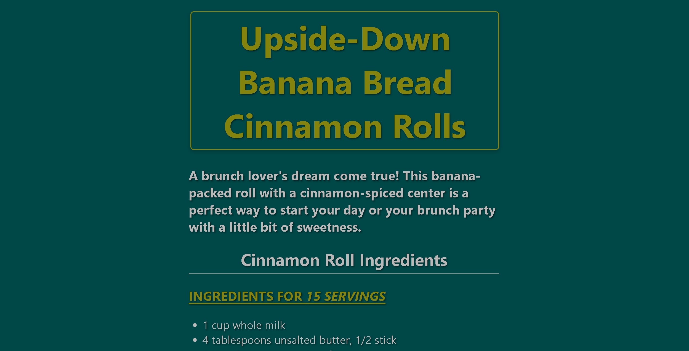

Project One
A fully responsive website developed with HTML and CSS, featuring my favorite food recipe and demonstrating my ability to design and implement both light and dark mode themes.
A fully responsive website developed with HTML and CSS, featuring my favorite food recipe and demonstrating my ability to design and implement both light and dark mode themes.
An interactive webpage demonstrating my proficiency in utilizing classes, IDs, and pseudo-classes to create engaging and dynamic web designs.
A blog post I made about the impact of cinematic Universes in Cinema.